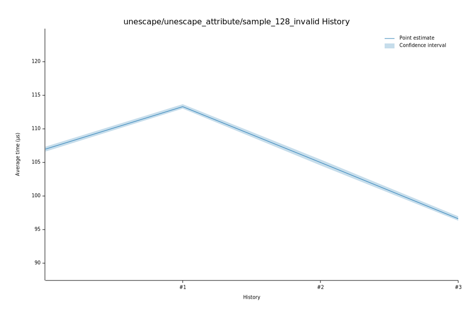

# 42023-01-21T06:21:05-08:00
|
Lower Bound |
Estimate |
Upper Bound |
| Value: |
36.44µs |
36.54µs |
36.66µs |
| Throughput: |
442.21MiB/s |
441.02MiB/s |
439.57MiB/s |
| Change in Value: |
-62.565% |
-62.196% |
-61.796% |
| Change in Throughput: |
+167.13% |
+164.52% |
+161.75% |
No change in performance detected.
# 32023-01-21T06:16:55-08:00
|
Lower Bound |
Estimate |
Upper Bound |
| Value: |
96.32µs |
96.63µs |
96.97µs |
| Throughput: |
167.29MiB/s |
166.76MiB/s |
166.17MiB/s |
| Change in Value: |
-8.6766% |
-8.0184% |
-7.2287% |
| Change in Throughput: |
+9.5009% |
+8.7174% |
+7.7919% |
No change in performance detected.
# 22023-01-21T06:12:24-08:00
|
Lower Bound |
Estimate |
Upper Bound |
| Value: |
104.60µs |
104.99µs |
105.45µs |
| Throughput: |
154.05MiB/s |
153.48MiB/s |
152.81MiB/s |
| Change in Value: |
-7.7926% |
-6.9910% |
-6.3244% |
| Change in Throughput: |
+8.4511% |
+7.5165% |
+6.7514% |
No change in performance detected.
# 12023-01-21T06:07:52-08:00
|
Lower Bound |
Estimate |
Upper Bound |
| Value: |
112.98µs |
113.30µs |
113.66µs |
| Throughput: |
142.62MiB/s |
142.22MiB/s |
141.77MiB/s |
| Change in Value: |
+4.5018% |
+5.4040% |
+6.3744% |
| Change in Throughput: |
-4.3079% |
-5.1269% |
-5.9924% |
No change in performance detected.
# 02023-01-21T06:03:25-08:00
|
Lower Bound |
Estimate |
Upper Bound |
| Value: |
106.65µs |
106.98µs |
107.35µs |
| Throughput: |
151.09MiB/s |
150.61MiB/s |
150.11MiB/s |